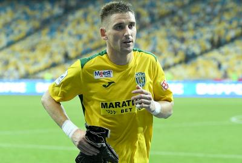

Максим Кучинський: «Для перемоги нам забракло трохи часу»
Максим Кучинський: «Для перемоги нам забракло трохи часу» Після досить тривалої паузи місце у карпатівських воротах зайняв Максим Кучинський. Фактично, роботи в кіпера було не надто багато, однак витягати м’яча із власних воріт все ж довелося – Папа Гуйє зрізав круглого у сітку... «Моє повернення? Усе нормально, ми ж готуємося до кожного матчу, однаково тренуємося. Сьогодні мені дали шанс вийти в основі, про це я дізнався на установці. Працював на повну силу, протягом матчу підказував захисникам маршрути їхнього пересування, щоб максимально зберегти ворота. На жаль, один гол ми пропустили. Вважаю, що це загальна помилка. Ми йшли в атаку, обрізалися, не змогли втримати прорив суперника і його простріл. Дуже шкода, що так сталося». «У перерві Олег Іванович просив нас заспокоїтися і підбадьорив. Він запевнив, що у нас все вийде – головне вірити і грати у свій футбол. У підсумку, ми відігралися, але перемогу не здобули. Я думаю, що ми втратили два очки, мали вигравати цей матч. Так, пропустили першими, дуже складно було відігратися. Гадаю, якби ще трохи часу – ми б таки здобули три очки» – підсумував кіпер «Карпат». Інформаційний центр ФК «Карпати» Фото: © ФК «Карпати»